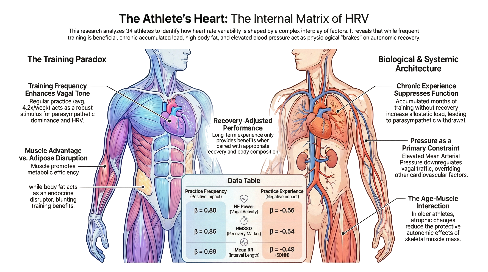

![]()

Overview of Main Findings
The study analyzes cardiac autonomic modulation in athletes (n = 34, from which 15 were females) through a Bayesian multivariate regression framework, isolating the distinct impacts of training variables, body composition, hemodynamics, and age on heart rate variability (HRV). The findings reveal a clear divergence in how training affects the autonomic nervous system. Frequent sport practice acts as a robust stimulus for parasympathetic dominance, significantly enhancing high-frequency power, RMSSD, and overall HRV. Conversely, long-term accumulated training experience without appropriate recovery suppresses autonomic function, leading to parasympathetic withdrawal and increased allostatic load.
Body composition modulates these training adaptations. Increased adiposity actively blunts the autonomic benefits of frequent training. Adipose tissue functions as an endocrine disruptor, increasing resting sympathetic tone and suppressing baroreflex sensitivity, preventing the expected vagal enhancements from regular exercise. Higher skeletal muscle mass offers a contrasting metabolic advantage that promotes vagally mediated bradycardia, though its full benefits require long-term training experience to manifest. Extreme muscle mass combined with high training frequency, typical of intensive hypertrophy protocols, maintains elevated sympathetic arousal and compresses high-frequency variability.
Systemic constraints like blood pressure and age further define the physiological limits of the cohort. Elevated mean arterial pressure overrides arterial stiffness as a primary cardiovascular constraint, demanding constant baroreceptor recalibration that directly downregulates efferent vagal traffic and limits overall heart rate variability. Age presents a unique dynamic: while the older athletes in this specific cohort demonstrate robust baseline fitness and longer RR intervals, age ultimately restricts the total variance of the cardiac cycle when interacting with high muscle mass, reflecting age-related atrophic changes and altered mechanoreceptor feedback. Ultimately, resting HRV in athletes represents a complex, interacting matrix of recent training frequency, chronic load, physical structure, and cardiovascular pressure.
Results
Sample characterization
The cross-sectional analysis included a total of 34 athletes, comprising 19 males and 15 females. The cohort presented a mean age of 26.5 ± 10.0 years (Age (years old), Overall N = 34). Participants reported a consistent training background, with an average sport practice frequency of 4.2 ± 1.4 times per week (Sport practice frequency (times per week)) and an accumulated sport practice experience of 48.0 ± 41.0 months.
Hemodynamic assessment revealed baseline parameters typical of an athletic population. The mean resting heart rate was 67.4 ± 13.5 beats per minute (Resting heart rate (bpm)), with males presenting a lower resting rate of 64.1 ± 12.7 bpm compared to 71.9 ± 13.5 bpm in females. Mean arterial pressure averaged 87.4 ± 8.4 mmHg across the sample.
Anthropometric and body composition measures demonstrated expected sexual dimorphism. Males exhibited higher total body weight (Body weight (kg), Male N = 19: 77.6 ± 17.9; Female N = 15: 68.0 ± 10.5) and lower total body fat relative to females (Body fat (%), Male N = 19: 17.1 ± 7.1; Female N = 15: 27.9 ± 5.1). Absolute muscle mass was superior in male participants (Muscle mass (kg), Male N = 19: 60.7 ± 9.7; Female N = 15: 46.6 ± 5.0). The overall body mass index stood at 26.0 ± 5.2 kg/m².
Resting autonomic modulation, quantified through heart rate variability, showed substantial inter-individual variance. The root mean square of successive differences averaged 85.8 ± 124.2 ms (RMSSD (ms)), and the standard deviation of NN intervals was 75.6 ± 84.5 ms (SDNN (ms)). Frequency-domain metrics similarly displayed large standard deviations, with high-frequency power averaging 5,460.3 ± 17,748.8 ms² (HF (ms²)) and low-frequency power at 16,093.6 ± 72,752.2 ms² (LF (ms²)).
All sample characteristics can be observed in Table 1.
| Characteristic | Overall N = 34 |
Sex
|
SMD
|
||
|---|---|---|---|---|---|
| Male N = 19 |
Female N = 15 |
Difference | 95% CI | ||
| Age (years old) | 26.5 ± 10.0 | 27.8 ± 12.2 | 24.8 ± 6.3 | 0.32 | -0.36, 1.0 |
| Sport practice frequency (times per week) | 4.2 ± 1.4 | 4.5 ± 1.2 | 3.9 ± 1.6 | 0.45 | -0.25, 1.1 |
| Sport practice experience (months) | 48.0 ± 41.0 | 48.8 ± 29.9 | 47.0 ± 53.3 | 0.04 | -0.66, 0.74 |
| Systolic blood pressure (mmHg) | 115.2 ± 12.2 | 120.6 ± 9.5 | 107.9 ± 11.9 | 1.2 | 0.46, 2.0 |
| Diastolic blood pressure (mmHg) | 73.5 ± 8.4 | 75.0 ± 9.5 | 71.5 ± 6.4 | 0.45 | -0.25, 1.1 |
| Mean arterial pressure (mmHg) | 87.4 ± 8.4 | 90.2 ± 8.5 | 83.6 ± 6.9 | 0.87 | 0.15, 1.6 |
| Pulse pressure (mmHg) | 41.7 ± 10.7 | 45.6 ± 9.1 | 36.4 ± 10.9 | 0.94 | 0.22, 1.7 |
| Resting heart rate (bpm) | 67.4 ± 13.5 | 64.1 ± 12.7 | 71.9 ± 13.5 | -0.62 | -1.3, 0.09 |
| Body weight (kg) | 73.5 ± 15.7 | 77.6 ± 17.9 | 68.0 ± 10.5 | 0.68 | -0.03, 1.4 |
| Height (cm) | 167.8 ± 9.7 | 171.7 ± 10.0 | 162.9 ± 7.0 | 1.1 | 0.31, 1.8 |
| Body mass index (kg/m²) | 26.0 ± 5.2 | 26.4 ± 6.1 | 25.6 ± 3.8 | 0.14 | -0.55, 0.84 |
| Body fat (%) | 21.7 ± 8.2 | 17.1 ± 7.1 | 27.9 ± 5.1 | -1.8 | -2.6, -0.98 |
| Muscle mass (kg) | 54.6 ± 10.6 | 60.7 ± 9.7 | 46.6 ± 5.0 | 1.9 | 1.0, 2.7 |
| Apendicular muscle mass (kg) | 28.1 ± 16.9 | 33.5 ± 21.1 | 21.2 ± 2.7 | 0.84 | 0.11, 1.6 |
| Skeletal muscle index (kg/m²) | 10.0 ± 6.4 | 11.6 ± 8.4 | 8.0 ± 0.9 | 0.62 | -0.10, 1.3 |
| Body water (%) | 57.1 ± 8.5 | 60.5 ± 5.1 | 52.5 ± 10.0 | 1.0 | 0.31, 1.8 |
| Bone mineral mass (kg) | 2.8 ± 0.5 | 3.1 ± 0.5 | 2.5 ± 0.2 | 1.6 | 0.82, 2.4 |
| RMSSD (ms) | 85.8 ± 124.2 | 108.9 ± 159.0 | 55.6 ± 42.9 | 0.47 | -0.26, 1.2 |
| SDNN (ms) | 75.6 ± 84.5 | 89.9 ± 106.5 | 57.0 ± 38.6 | 0.42 | -0.31, 1.2 |
| Mean RR (ms) | 903.9 ± 181.1 | 954.2 ± 167.9 | 838.2 ± 182.8 | 0.69 | -0.06, 1.4 |
| HF (ms²) | 5,460.3 ± 17,748.8 | 8,247.5 ± 23,369.8 | 1,815.5 ± 2,774.8 | 0.40 | -0.33, 1.1 |
| LF (ms²) | 16,093.6 ± 72,752.2 | 26,601.6 ± 96,495.2 | 2,352.5 ± 3,878.0 | 0.37 | -0.36, 1.1 |
| VLF (ms²) | 1,381.2 ± 7,087.1 | 2,388.0 ± 9,409.9 | 64.7 ± 88.5 | 0.36 | -0.37, 1.1 |
| Stress index (c.u.) | 11.2 ± 8.5 | 10.1 ± 8.6 | 12.6 ± 8.4 | -0.31 | -1.0, 0.42 |
| Tympanic temperature (º) | 36.7 ± 0.3 | 36.6 ± 0.3 | 36.8 ± 0.2 | -0.56 | -1.3, 0.16 |
| Forehead skin temperature (º) | 34.2 ± 1.1 | 34.3 ± 1.1 | 34.1 ± 1.2 | 0.17 | -0.53, 0.88 |
| Chest skin temperature (º) | 33.6 ± 2.4 | 34.0 ± 1.6 | 33.2 ± 3.2 | 0.32 | -0.39, 1.0 |
| Shoulder skin temperature (º) | 33.4 ± 1.5 | 33.6 ± 1.7 | 33.2 ± 1.2 | 0.33 | -0.38, 1.0 |
| Hand skin temperature (º) | 30.9 ± 2.6 | 31.1 ± 2.4 | 30.6 ± 3.0 | 0.18 | -0.53, 0.88 |
| Foot skin temperature (º) | 31.1 ± 2.2 | 31.2 ± 1.9 | 31.0 ± 2.6 | 0.09 | -0.62, 0.80 |
Cardiac autonomic modulation
Regular physiological stimuli drive functional adaptations in the autonomic nervous system, yet the nature of the training load dictates the specific cardiac autonomic outcome. Sport practice frequency demonstrates a clear positive relationship with all heart rate variability parameters, enhancing vagal tone at rest. The model is certain of an effect of sport practice frequency on high-frequency power (\(\beta\) = 0.8, CI95%[0.24, 1.37], pd = 99.6%, ps = 99%), which captures respiratory sinus arrhythmia and maps directly to parasympathetic nervous system activity. This frequent exercise resets the baroreceptor operating point and widens its functional range, amplifying the oscillations captured by low-frequency power (\(\beta\) = 0.82, CI95%[0.22, 1.36], pd = 99.6%, ps = 99.2%). It also induces chronic volume expansion, improving vasomotor reserves and elevating very-low-frequency power (\(\beta\) = 0.8, CI95%[0.22, 1.37], pd = 99.6%, ps = 99%). In the time domain, frequency expands the total regulatory capacity of the autonomic nervous system, demanding a wider dynamic range of intervals to match metabolic demands. This increases the standard deviation of NN intervals (\(\beta\) = 0.89, CI95%[0.19, 1.52], pd = 99.4%, ps = 98.8%), the root mean square of successive differences (\(\beta\) = 0.86, CI95%[0.22, 1.49], pd = 99.3%, ps = 98.8%), and lengthens the mean RR interval (\(\beta\) = 0.69, CI95%[0.16, 1.2], pd = 99.3%, ps = 98.3%).
Conversely, accumulated sport practice experience without adequate recovery manifests as a depressed autonomic profile. Chronic physical stress increases allostatic load, leading to parasympathetic withdrawal even at rest. Prolonged exposure to high training volumes without concurrent increases in fitness blunts the normal cardiac autonomic tone. Athletes with high months of accumulated experience encounter periods of non-functional overreaching, which suppresses the fast vagal modulations at the sinoatrial node. The model establishes a certain negative effect of experience on RMSSD (\(\beta\) = -0.54, CI95%[-1.1, -0.02], pd = 97.6%, ps = 95.3%) and SDNN (\(\beta\) = -0.49, CI95%[-1.05, 0.07], pd = 96%, ps = 92%). This parasympathetic withdrawal drives a negative main effect on high-frequency power (\(\beta\) = -0.56, CI95%[-1.05, -0.1], pd = 98.8%, ps = 97.3%), very-low-frequency power (\(\beta\) = -0.5, CI95%[-0.98, -0.01], pd = 97.9%, ps = 95.5%), and an indicative negative effect on low-frequency power (\(\beta\) = -0.5, CI95%[-0.97, 0], pd = 97.8%, ps = 95.1%).
These autonomic adaptations to training are heavily mediated by body composition. Increases in total body fat independently lower the amplitude of respiratory sinus arrhythmia. The structural accumulation of visceral and subcutaneous fat increases resting sympathetic tone to support the expanded vascular bed, reducing the variation observed in consecutive heartbeats. Adiposity suppresses baroreflex sensitivity, as obese states involve chronic sympathetic hyperactivity that diminishes regulatory oscillations. The model shows an indicative negative relationship between body fat and high-frequency power (\(\beta\) = -0.74, CI95%[-1.85, 0.39], pd = 91.1%, ps = 87.9%) and low-frequency power (\(\beta\) = -0.79, CI95%[-1.92, 0.33], pd = 91.9%, ps = 89.1%). Adipose tissue functions as an active endocrine organ, secreting pro-inflammatory cytokines that alter afferent vagal signaling. Consequently, excess body fat impairs the capacity of frequent exercise to increase parasympathetic tone. The interaction between body fat percentage and sport practice frequency exhibits a certain negative effect across domains, reducing high-frequency power (\(\beta\) = -1.12, CI95%[-1.8, -0.44], pd = 99.8%, ps = 99.7%), low-frequency power (\(\beta\) = -1.1, CI95%[-1.8, -0.42], pd = 99.8%, ps = 99.7%), and very-low-frequency power (\(\beta\) = -1.1, CI95%[-1.79, -0.41], pd = 99.8%, ps = 99.6%). Similar certain negative interactive effects appear for SDNN (\(\beta\) = -0.88, CI95%[-1.66, -0.05], pd = 98.1%, ps = 96.9%) and RMSSD (\(\beta\) = -0.93, CI95%[-1.69, -0.13], pd = 98.8%, ps = 97.9%). Yet, a compensatory physiological profile emerges in athletes maintaining long-term training despite higher adiposity. The interaction between body fat and sport practice experience shows certain positive effects on high-frequency power (\(\beta\) = 1.01, CI95%[-0.05, 2.18], pd = 96.5%, ps = 95.1%), and indicative positive effects on low-frequency power (\(\beta\) = 0.85, CI95%[-0.28, 1.97], pd = 93.8%, ps = 91.4%), very-low-frequency power (\(\beta\) = 0.83, CI95%[-0.3, 1.96], pd = 93.3%, ps = 91.1%), RMSSD (\(\beta\) = 1.00, CI95%[-0.21, 2.27], pd = 94.6%, ps = 92.6%), and SDNN (\(\beta\) = 0.99, CI95%[-0.3, 2.31], pd = 93.8%, ps = 91.8%).
Skeletal muscle mass provides a contrasting metabolic influence, acting as a primary site for glucose disposal and lipid oxidation. High metabolic efficiency in muscle reduces resting cardiac demand, allowing for vagally mediated bradycardia. Muscle mass as a main effect suggests a positive relationship with high-frequency power (\(\beta\) = 0.49, CI95%[-0.53, 1.47], pd = 84%, ps = 78.7%), SDNN (\(\beta\) = 0.55, CI95%[-0.59, 1.74], pd = 84.3%, ps = 80.1%), and the mean RR interval (\(\beta\) = 0.56, CI95%[-0.42, 1.43], pd = 89.5%, ps = 85.3%). Long-term training adaptations in individuals with higher muscle mass improve endothelial function and augment parasympathetic regulation. The autonomic benefits of muscle mass require prolonged training experience to manifest completely, with the interaction between muscle mass and sport practice experience indicating positive effects on high-frequency power (\(\beta\) = 1.13, CI95%[-0.43, 2.71], pd = 93.2%, ps = 91.5%) and RMSSD (\(\beta\) = 1.13, CI95%[-0.6, 2.9], pd = 90.4%, ps = 88.3%). However, extreme muscle mass coupled with high training frequency, often reflective of hypertrophy resistance protocols, imposes massive mechanical tension and localized metabolic acidosis. Without proper recovery, this combination maintains an elevated sympathetic baseline, somewhat suggesting a negative interaction effect on high-frequency power (\(\beta\) = -0.37, CI95%[-1.14, 0.4], pd = 83.6%, ps = 76.5%).
Hemodynamic resistance exerts a continuous regulatory influence over this cardiac autonomic network. Elevated mean arterial pressure demands continuous adjustment of the baroreflex mechanism. Chronic pressure elevation leads to baroreceptor resetting, fundamentally downregulating efferent vagal traffic to the heart to accommodate the higher baseline perfusion. This requires a faster resting heart rate to maintain adequate cardiac output, yielding a certain negative effect on the mean RR interval (\(\beta\) = -0.78, CI95%[-1.54, -0.03], pd = 97.8%, ps = 96.5%). The central nervous system downregulates efferent vagal traffic to accommodate higher baseline pressure, driving indicative negative effects on high-frequency power (\(\beta\) = -0.65, CI95%[-1.51, 0.12], pd = 94.9%, ps = 91.7%), very-low-frequency power (\(\beta\) = -0.55, CI95%[-1.37, 0.27], pd = 91.4%, ps = 87.3%), SDNN (\(\beta\) = -0.77, CI95%[-1.72, 0.15], pd = 95%, ps = 92.7%), and RMSSD (\(\beta\) = -0.73, CI95%[-1.64, 0.19], pd = 94.4%, ps = 92.1%). In this population, mean arterial pressure overrides arterial stiffness as a primary determinant of variability; the parameter estimates for pulse pressure did not cross the threshold of 0.8 for the probability of direction across domains.
Age introduces specific limits and selection effects. While biological aging generally reduces heart rate variability, this specific athletic cohort exhibits an anomalous positive main effect of age on the mean RR interval (\(\beta\) = 0.95, CI95%[0.31, 1.53], pd = 99.6%, ps = 99.4%), alongside indicative positive effects on high-frequency power (\(\beta\) = 0.48, CI95%[-0.17, 1.13], pd = 93.4%, ps = 88.4%) and low-frequency power (\(\beta\) = 0.45, CI95%[-0.21, 1.11], pd = 92%, ps = 86.7%). This likely reflects a selection effect where older participants remaining in the sample possess superior baseline fitness. Yet, aging combined with specific physical structures exposes biological limits. As individuals age, the protective autonomic effects of skeletal muscle diminish due to atrophic changes and altered mechanoreceptor feedback. The interaction of age and muscle mass reveals indicative negative effects on high-frequency power (\(\beta\) = -0.65, CI95%[-1.61, 0.17], pd = 93.5%, ps = 90.2%) and SDNN (\(\beta\) = -0.77, CI95%[-1.75, 0.26], pd = 93.5%, ps = 90.8%), restricting the total variance of the cardiac cycle. Concurrently, a certain interaction effect between body fat and age on the mean RR interval (\(\beta\) = 0.6, CI95%[-0.05, 1.19], pd = 97.1%, ps = 94.9%) confirms older athletes tolerate adiposity differently regarding their baseline heart rate and intrinsic sinus node function.
All the model estimates can be observed in Table 2.
| Parameter |
Estimates
|
pd | ps | BF | ||
|---|---|---|---|---|---|---|
| Std. Effect | 95% CI | |||||
| HF | [Sport practice experience (months)] | -0.56 | [-1.05, -0.1] | 0.988 | 0.973 | 1.27 |
| [Sport practice frequency (weekly)] | 0.80 | [0.24, 1.37] | 0.996 | 0.990 | 3.51 | |
| [Age (years old)] | 0.48 | [-0.17, 1.13] | 0.934 | 0.884 | 0.35 | |
| [Body fat (%)] | -0.74 | [-1.85, 0.39] | 0.911 | 0.879 | 0.49 | |
| [Body fat (%)] ⨉ [Sport practice experience (months)] | 1.01 | [-0.05, 2.18] | 0.965 | 0.951 | 1.11 | |
| [Body fat (%)] ⨉ [Sport practice frequency (weekly)] | -1.12 | [-1.8, -0.44] | 0.998 | 0.997 | 15.81 | |
| [Muscle mass (kg)] | 0.49 | [-0.53, 1.47] | 0.840 | 0.787 | 0.27 | |
| [Muscle mass (kg)] ⨉ [Sport practice experience (months)] | 1.13 | [-0.43, 2.71] | 0.932 | 0.915 | 0.87 | |
| [Muscle mass (kg)] ⨉ [Sport practice frequency (weekly)] | -0.37 | [-1.14, 0.4] | 0.836 | 0.765 | 0.21 | |
| [Muscle mass (kg)] ⨉ [Age (years old)] | -0.65 | [-1.61, 0.17] | 0.935 | 0.902 | 0.49 | |
| [Mean arterial pressure (mmHg)] | -0.65 | [-1.51, 0.12] | 0.949 | 0.917 | 0.54 | |
| LF | [Sport practice experience (months)] | -0.50 | [-0.97, 0] | 0.978 | 0.951 | 0.67 |
| [Sport practice frequency (weekly)] | 0.82 | [0.22, 1.36] | 0.996 | 0.992 | 4.23 | |
| [Age (years old)] | 0.45 | [-0.21, 1.11] | 0.920 | 0.867 | 0.31 | |
| [Body fat (%)] | -0.79 | [-1.92, 0.33] | 0.919 | 0.891 | 0.54 | |
| [Body fat (%)] ⨉ [Sport practice experience (months)] | 0.85 | [-0.28, 1.97] | 0.938 | 0.914 | 0.67 | |
| [Body fat (%)] ⨉ [Sport practice frequency (weekly)] | -1.10 | [-1.8, -0.42] | 0.998 | 0.997 | 13.61 | |
| [Muscle mass (kg)] | 0.45 | [-0.56, 1.48] | 0.822 | 0.763 | 0.26 | |
| [Muscle mass (kg)] ⨉ [Sport practice experience (months)] | 0.89 | [-0.67, 2.46] | 0.880 | 0.853 | 0.55 | |
| [Muscle mass (kg)] ⨉ [Age (years old)] | -0.54 | [-1.43, 0.36] | 0.896 | 0.848 | 0.33 | |
| [Mean arterial pressure (mmHg)] | -0.58 | [-1.4, 0.25] | 0.926 | 0.887 | 0.41 | |
| RMSSD | [Sport practice experience (months)] | -0.54 | [-1.1, -0.02] | 0.976 | 0.953 | 0.73 |
| [Sport practice frequency (weekly)] | 0.86 | [0.22, 1.49] | 0.993 | 0.988 | 3.61 | |
| [Age (years old)] | 0.48 | [-0.29, 1.21] | 0.905 | 0.853 | 0.30 | |
| [Body fat (%)] | -0.50 | [-1.79, 0.73] | 0.806 | 0.756 | 0.29 | |
| [Body fat (%)] ⨉ [Sport practice experience (months)] | 1.00 | [-0.21, 2.27] | 0.946 | 0.926 | 0.79 | |
| [Body fat (%)] ⨉ [Sport practice frequency (weekly)] | -0.93 | [-1.69, -0.13] | 0.988 | 0.979 | 1.97 | |
| [Muscle mass (kg)] | 0.55 | [-0.55, 1.69] | 0.850 | 0.803 | 0.31 | |
| [Muscle mass (kg)] ⨉ [Sport practice experience (months)] | 1.13 | [-0.6, 2.9] | 0.904 | 0.883 | 0.72 | |
| [Muscle mass (kg)] ⨉ [Age (years old)] | -0.72 | [-1.7, 0.25] | 0.932 | 0.904 | 0.54 | |
| [Mean arterial pressure (mmHg)] | -0.73 | [-1.64, 0.19] | 0.944 | 0.921 | 0.62 | |
| SDNN | [Sport practice experience (months)] | -0.49 | [-1.05, 0.07] | 0.960 | 0.920 | 0.47 |
| [Sport practice frequency (weekly)] | 0.89 | [0.19, 1.52] | 0.994 | 0.988 | 3.16 | |
| [Age (years old)] | 0.44 | [-0.36, 1.2] | 0.880 | 0.820 | 0.26 | |
| [Body fat (%)] ⨉ [Sport practice experience (months)] | 0.99 | [-0.3, 2.31] | 0.938 | 0.918 | 0.75 | |
| [Body fat (%)] ⨉ [Sport practice frequency (weekly)] | -0.88 | [-1.66, -0.05] | 0.981 | 0.969 | 1.39 | |
| [Muscle mass (kg)] | 0.55 | [-0.59, 1.74] | 0.843 | 0.801 | 0.33 | |
| [Muscle mass (kg)] ⨉ [Sport practice experience (months)] | 1.14 | [-0.69, 2.93] | 0.900 | 0.878 | 0.72 | |
| [Muscle mass (kg)] ⨉ [Age (years old)] | -0.77 | [-1.75, 0.26] | 0.935 | 0.908 | 0.55 | |
| [Mean arterial pressure (mmHg)] | -0.77 | [-1.72, 0.15] | 0.950 | 0.927 | 0.67 | |
| VLF | [Sport practice experience (months)] | -0.50 | [-0.98, -0.01] | 0.979 | 0.955 | 0.78 |
| [Sport practice frequency (weekly)] | 0.80 | [0.22, 1.37] | 0.996 | 0.990 | 4.20 | |
| [Age (years old)] | 0.43 | [-0.22, 1.1] | 0.913 | 0.851 | 0.28 | |
| [Body fat (%)] | -0.79 | [-1.91, 0.35] | 0.918 | 0.890 | 0.53 | |
| [Body fat (%)] ⨉ [Sport practice experience (months)] | 0.83 | [-0.3, 1.96] | 0.933 | 0.911 | 0.63 | |
| [Body fat (%)] ⨉ [Sport practice frequency (weekly)] | -1.10 | [-1.79, -0.41] | 0.998 | 0.996 | 11.50 | |
| [Muscle mass (kg)] | 0.45 | [-0.56, 1.48] | 0.815 | 0.757 | 0.25 | |
| [Muscle mass (kg)] ⨉ [Sport practice experience (months)] | 0.87 | [-0.71, 2.46] | 0.875 | 0.848 | 0.52 | |
| [Muscle mass (kg)] ⨉ [Age (years old)] | -0.51 | [-1.37, 0.41] | 0.882 | 0.829 | 0.30 | |
| [Mean arterial pressure (mmHg)] | -0.55 | [-1.37, 0.27] | 0.914 | 0.873 | 0.37 | |
| Mean RR | [Sport practice frequency (weekly)] | 0.69 | [0.16, 1.2] | 0.993 | 0.983 | 1.99 |
| [Age (years old)] | 0.95 | [0.31, 1.53] | 0.996 | 0.994 | 5.96 | |
| [Body fat (%)] | -0.60 | [-1.59, 0.46] | 0.887 | 0.847 | 0.36 | |
| [Body fat (%)] ⨉ [Age (years old)] | 0.60 | [-0.05, 1.19] | 0.971 | 0.949 | 0.80 | |
| [Muscle mass (kg)] | 0.56 | [-0.42, 1.43] | 0.895 | 0.853 | 0.36 | |
| [Mean arterial pressure (mmHg)] | -0.78 | [-1.54, -0.03] | 0.978 | 0.965 | 1.18 | |
Statistical analysis
We utilized a Bayesian multivariate multiple regression framework to model the heart rate variability parameters. Modeling multiple response variables simultaneously accounts for the inherent covariance structure among the dependent variables. Heart rate variability metrics derive from the same underlying physiological signals and possess strong mathematical and biological correlations. Fitting separate univariate models ignores this covariance and increases the probability of Type I errors.
We constructed two distinct multivariate models. The time-domain model combined the root mean square of successive differences between normal heartbeats, the standard deviation of NN intervals, and the mean RR interval into a single response matrix.
\[ Y_{time} = \begin{bmatrix} \rm RMSSD \\ \rm SDNN \\ \rm Mean~RR \end{bmatrix} \]
The frequency-domain model combined high-frequency power, low-frequency power, and very-low-frequency power into a separate response matrix.
\[ Y_{freq} = \begin{bmatrix} \rm HF \\ \rm LF \\ \rm VLF \end{bmatrix} \]
We assumed that each multivariate response vector follows a multivariate normal distribution. The distribution is parameterized by a mean vector and a covariance matrix.
\[ Y \sim \mathcal{N}(\mu, \Sigma) \]
The mean vector \(\mu\) is defined by a linear predictor. The model formula incorporates continuous measures of total body fat and total muscle mass. It includes categorical and continuous demographic variables representing sex and age. Training variables include sport practice frequency and sport practice experience in months. Hemodynamic control variables include mean arterial pressure and pulse pressure. The syntax specifies two-way interactions between the body composition metrics and the demographic and training variables. This allows the model to test whether the effects of training and age depend on the physical structure of the athlete. The equation for the linear predictor expands to include the main effects and the interaction terms.
\[ \mu = \beta_0 + \beta_1 X_{\rm fat} + \beta_2 X_{\rm muscle} + \beta_3 X_{\rm sex} + \beta_4 X_{\rm age} + \beta_5 X_{\rm freq} + \beta_6 X_{\rm exp} + \beta_7 X_{\rm pam} + \beta_8 X_{\rm pp} + \gamma_{\rm interactions} \]
The \(\gamma_{interactions}\) term represents the cross-products of the variables specified in the model formula. Specifically, total body fat interacts with sex, age, practice frequency, and practice experience. Total muscle mass interacts with the same four demographic and training variables.
The covariance matrix \(\Sigma\) captures the residual variance for each response variable and the residual covariance between all pairs of response variables. For a three-dimensional response vector, the covariance matrix is a three-by-three symmetric matrix.
\[ \Sigma = \begin{bmatrix} \sigma_1^2 & \rho_{12}\sigma_1\sigma_2 & \rho_{13}\sigma_1\sigma_3 \\ \rho_{21}\sigma_2\sigma_1 & \sigma_2^2 & \rho_{23}\sigma_2\sigma_3 \\ \rho_{31}\sigma_3\sigma_1 & \rho_{32}\sigma_3\sigma_2 & \sigma_3^2 \end{bmatrix} \]
In this matrix, \(\sigma_k^2\) represents the residual variance for the \(k\)-th response variable. The term \(\rho_{jk}\) represents the residual correlation between the \(j\)-th and \(k\)-th response variables.
Data preparation involved standardizing the continuous predictor and response variables to a zero mean and a standard deviation of one. Standardizing continuous variables centers the data, which reduces collinearity between main effects and their corresponding interaction terms. This procedure scales the coefficients so that each parameter estimate represents the expected change in the response variable, expressed in standard deviation units, for a one standard deviation increase in the predictor variable. Centering the data improves the efficiency of the sampling algorithm by creating a parameter space with a more isotropic geometry.
We established weakly informative priors for the model parameters to regularize the estimates and restrict the sampler to plausible regions of the parameter space. Regularizing priors prevent overfitting and reduce the influence of extreme observations. The population-level effects, which correspond to the beta coefficients in the linear predictor, received a normal prior distribution centered at zero with a standard deviation of 3.
\[ \beta \sim \mathcal{N}(0, 3) \]
This normal prior allocates most of its probability mass between -9 and 9 standard deviations. Since the data are standardized, an effect size of 9 standard deviations is physiologically impossible. The prior exerts mild shrinkage toward zero without dominating the likelihood of the observed data.
The residual standard deviations for each response variable received a half-normal prior. Standard deviations cannot be negative, so the distribution is truncated at zero.
\[ \sigma \sim \mathcal{N}^{+}(0, 3) \]
The correlation matrix for the residuals received an LKJ prior. The Lewandowski-Kurowicka-Joe distribution defines a probability density over positive definite correlation matrices. We specified a shape parameter of 1 for the LKJ prior.
\[ \rho \sim \mathcal{LKJ}(1) \]
An LKJ prior with a shape parameter of 1 provides a uniform prior over all valid correlation matrices. It expresses no initial preference regarding the strength or direction of the residual correlations among the heart rate variability parameters.
Model estimation was performed using the brms package in the R programming environment. The package translates the model syntax into Stan code, which compiles in C++ to perform Markov Chain Monte Carlo sampling. We utilized the No-U-Turn Sampler, an extension of Hamiltonian Monte Carlo. Hamiltonian Monte Carlo uses the gradient of the log-posterior to simulate the physical dynamics of a particle moving over a frictionless surface. This allows the sampler to take large steps through the parameter space and reduces the autocorrelation between successive samples.
We executed the sampling algorithm with four parallel chains to assess the stability of the posterior estimates. Each chain ran for 5000 iterations. We discarded the first 2500 iterations of each chain as warmup. During the warmup phase, the sampler adapts the step size and estimates the inverse mass matrix. Discarding these initial samples ensures that the retained samples come from the stationary distribution. The procedure generated a total of 10000 post-warmup samples for inference.
We modified the control parameters of the sampling algorithm to prevent divergent transitions. The adapt_delta parameter controls the target average acceptance probability during the warmup phase. We increased this value to 0.999. A higher adapt_delta forces the sampler to take smaller leapfrog steps during the Hamiltonian simulation. Smaller steps increase the precision of the numerical integration, allowing the sampler to navigate regions of high posterior curvature without diverging. We also increased the max_treedepth parameter to 50. The No-U-Turn Sampler builds a binary tree of states at each iteration. A maximum depth of 50 prevents the sampler from terminating trajectories prematurely, ensuring comprehensive exploration of complex posterior distributions.
Convergence of the Markov chains was evaluated using the potential scale reduction factor (\(\hat{R}\)) and the effective sample size. An \(\hat{R}\) value near 1.00 indicates that the parallel chains have mixed and converge to the same distribution. The effective sample size estimates the number of independent draws equivalent to the autocorrelated samples produced by the algorithm.
Parameter credibility was assessed using the probability of direction (pd). The probability of direction calculates the proportion of the posterior distribution that has the same sign as the median estimate. It ranges from 0.5 to 1.0. A value of 0.5 indicates that the posterior is perfectly symmetric around zero. A value of 1.0 indicates that the entire posterior distribution lies on one side of zero. The results also report the probability of significance (ps) and the Bayes Factor (BF) as supplementary indices of effect reliability.